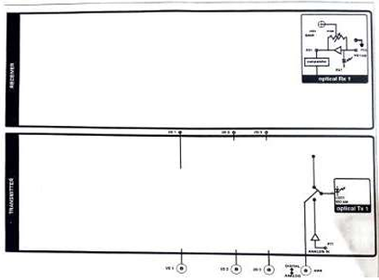
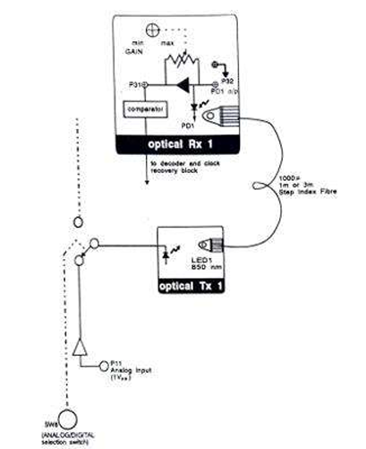
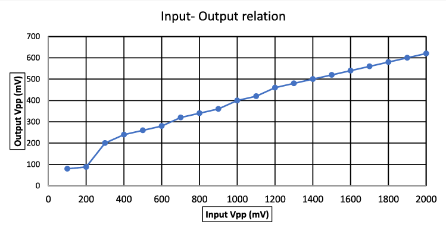
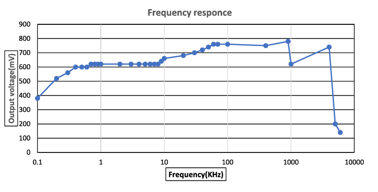

Aim
To set up an 850 nm fibre optic analog link and observe the relationship between the input signal and the received signal, and to measure the bandwidth of the link.
Apparatus
The equipment and materials required for the experiment are:
- OFT Kit
- Oscilloscope
- Function generator
- 1 m and 3 m fiber
Theory
The LED used is an 850 nm LED. The fibre is a multimode fibre with a core diameter of 1000 μm. The detector is a simple PIN detector. The LED optical power output is directly proportional to the current driving the LED. Similarly, for the PIN diode, the current is proportional to the amount of light falling on the detector. Thus, even though the LED and the PIN diode are nonlinear devices, the current in the PIN diode is directly proportional to the driving current of the LED. This makes the optical communication system a linear system.
Procedure
Step-by-step instructions for the experiment:
- Identify the interfaces on the OFT with the help of the layout (refer the following figures and tables).
Table 1.1
S.No. Identification Name Function Location 1 P11 ANALOG IN Used to feed in analog sinusoidal 1Vp-p signal Transmitter Block 2 P32 PD1 O/P PIN Detector signal monitoring post Optical Rx1 Block 3 P31 Received signal with amplification Optical Rx1 Block 4 GAIN Gain adjustment Potentiometer Optical Rx1 Block 5 SW8 Analog/Digital selection switch Should be set to ANALOG position 6 LED1 850nm 850 nm LED (source) Optical Tx1 Block 7 PD1 Pin Detector Optical Rx1 Block 8 I/O1, I/O2, I/O3 Input/Output BNCs and Posts - for feeding in signal to the Experimentor from function generator or
- to observe signal from the Experimentor on the Oscilloscope.
  Figure 1: OFT Layout Figure 2: Enter Caption - Use the 1 m and 3 m optical fibres provided with the OFT. Ensure that the ends of the fiber are clean.
- Set the switch SW8 to the ANALOG position. Switch the power on (located at the top right-hand corner).
- Connect a BNC-BNC cable from the function generator to the BNC socket I/O3.
- Connect the signal post I/O3 to the ANALOG IN post P11 using a patch cord.
- Connect one end of the 1 m fiber to the LED source LED1 in the Optical Tx1 block.
- Connect the other end of the fiber to the detector PD1 in the Optical Rx1 block.
Input-Output Relationship of Link
- Feed a sinusoidal wave of 1 kHz, 1 Vpp signal (with zero DC) from the function generator to P11.
- Observe the PIN detector output signal at P32 in the Optical Rx1 block.
- Vary the input signal level driving the LED and observe the received signal at the PIN detector.
- Plot the received signal peak-to-peak amplitude with respect to the input signal peak-to-peak amplitude.
Gain Control
- The PIN detector at P32 is amplified, with amplifier gain controlled by the GAIN potentiometer.
- With a 3 Vpp input signal at P11, observe P31 as the gain potentiometer is varied.
- Note that the signal at P31 gets clipped below 0 V and above 3.5 V.
Bandwidth of Fiber Link
- Apply a 2 Vpp sinusoidal signal at P11 and observe the output at P31. Adjust gain such that no clipping takes place.
- Vary the frequency of the input signal from 100 Hz to 5 MHz and measure the amplitude of the received signal.
- Plot the received signal amplitude as a function of frequency (use a logarithmic scale for frequency). Note the frequency range for which the response is flat.
- Note the frequency at which the received signal starts getting distorted. Explain this using the bandwidth obtained.
Observations
| Input-Output Relationship | Frequency Response |
|---|---|
|  |  |
| For a sine wave input at 1 kHz, the input-output variation is observed | The frequency response of a sinusoidal signal at 1 V input voltage is observed |
Inferences
The linear relationship between the input and output of the fiber link was observed when the signal was within the operating frequency of the fiber.
Signal clipping began at 850 mV input sinusoidal 1 kHz signal peak-to-peak amplitude.
The bandwidth of the fiber was observed to be from 1 kHz to 1 MHz, after which the signal gets distorted and attenuates rapidly, producing noise at 6 MHz.